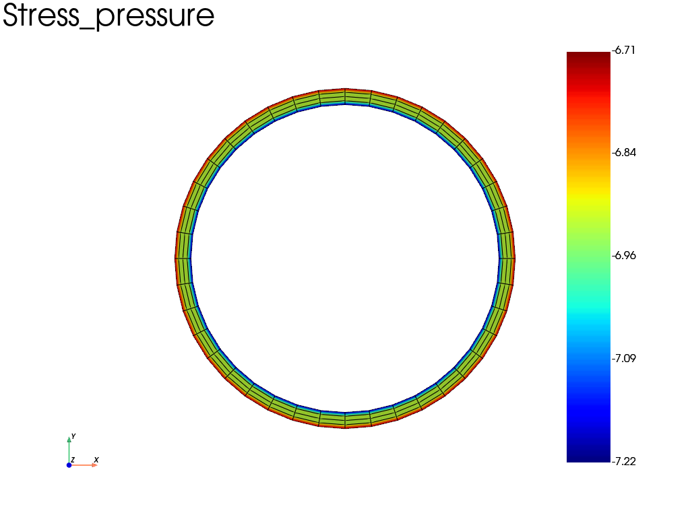

Note
Go to the end to download the full example code.
Pressure constraint
This example illustrate the use the pressure constraint for the simulation of a pipe under internal pressure and external pressure. The problem is treated in 2D with plane strain assumption.
import fedoo as fd
# Pressure in MPa
external_pressure = 0.1
internal_pressure = 2
radius = 200
thickness = 20
fd.ModelingSpace("2D") # plane strain assumption
mesh = fd.mesh.hollow_disk_mesh(radius, thickness, nr=5, nt=41)
material = fd.constitutivelaw.ElasticIsotrop(200e3, 0.3)
wf = fd.weakform.StressEquilibrium(material)
solid_assembly = fd.Assembly.create(wf, mesh)
To find the nodes belonging to the boundary of the pipe, the
fedoo.Mesh.find_nodes() method is used with the “Distance” criterion
from the center of pipe whose coordinates is [0, 0].
ext_nodes = mesh.find_nodes("Distance", ([0, 0], radius))
int_nodes = mesh.find_nodes("Distance", ([0, 0], radius - thickness))
The pressure requires to build a weaform over a surface Mesh. To
automatically build the required surface mesh from a set of nodes, with use
the fedoo.contraint.Pressure.from_nodes() constructor.
Alternatively, we can use the
fedoo.contraint.Pressure.from_elements() constructor from a set of
element to extract the external surface.
Note
The from_nodes and from_elements constructor can’t be used to apply a
pressure over a shell structure because, as the shell mesh is a surface
mesh, these constructors will extract linear mesh of the boundaries.
To apply the mesh over a shell geometry, the
fedoo.contraint.Pressure constructor needs to be called.
See the example
sphx_glr_examples_01_simple_spherical_shell_compression.py
ext_pressure = fd.constraint.Pressure.from_nodes(mesh, ext_nodes, external_pressure)
int_pressure = fd.constraint.Pressure.from_nodes(mesh, int_nodes, internal_pressure)
Define a problem from the solid and pressure assemblies The 3 assemblies are sumed.
pb = fd.problem.Linear(solid_assembly + ext_pressure + int_pressure)
pb.solve()
pb.get_results(solid_assembly, "Stress").plot("Stress", "pressure", "Node")

Total running time of the script: (0 minutes 0.138 seconds)